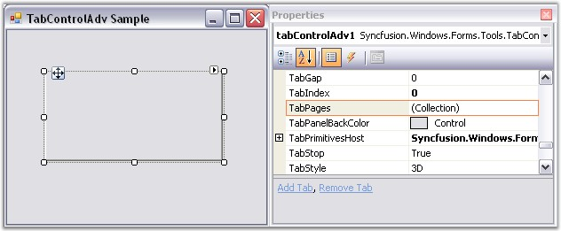
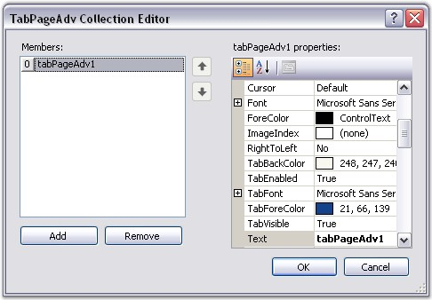
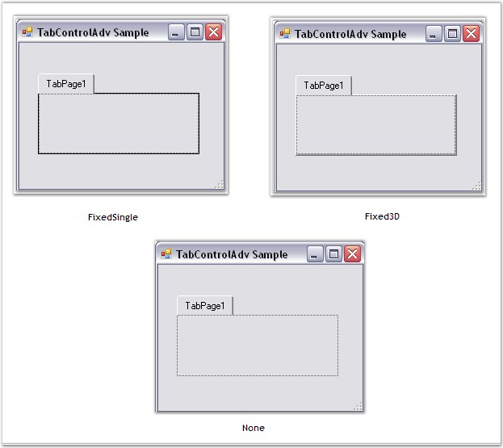
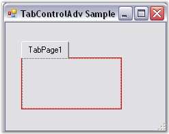

TabPages
On Clicking the TabPages property in the Properties grid, the TabPageAdv Collection Editor will be opened.

Figure 1041: TabPages property in the Properties Grid
The TabPageAdv Collection Editor can be used to add TabPages to the TabControlAdv and customize the TabPages according to needs of the user.

Figure 1042: TabPageAdv Collection Editor
The BorderStyle property of TabControlAdv can be used to set the border styles for the TabPages.
The three types of border styles are given below.
· FixedSingle
· Fixed 3D
· None
|
TabControlAdv Property |
Description |
|
BorderStyle |
Gets / sets the border styles for the tabpages. It includes the following styles:
· FixedSingle · Fixed3D · None |

Figure 1043: Border Styles in TabControlAdv
FixedSingleBorderColor
The FixedSingleBorderColor property is used to set a color for the border of the TabPage in the TabControlAdv when the BorderStyle is set to FixedSingle.
|
TabControlAdv Property |
Description |
|
FixedSingleBorderColor |
Gets / sets a color for the border of the TabPage in the TabControlAdv when the BorderStyle is set to FixedSingle. |

Figure 1044: FixedSingleBorderColor set to Red
 Note: The
TabControlAdv.ResetFixedSingleBorderColor() method resets the border color of
the TabPage to the default value.
Note: The
TabControlAdv.ResetFixedSingleBorderColor() method resets the border color of
the TabPage to the default value.